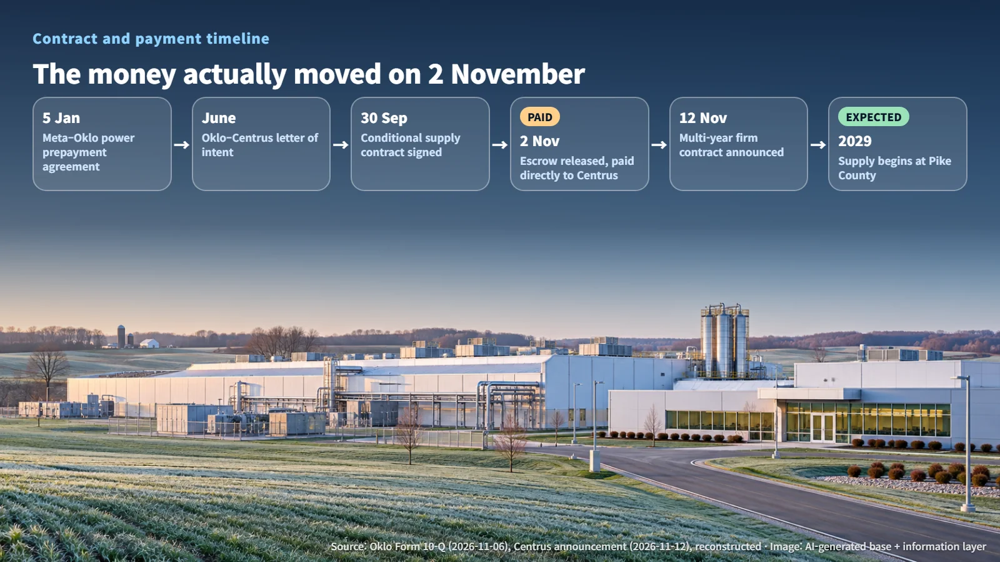
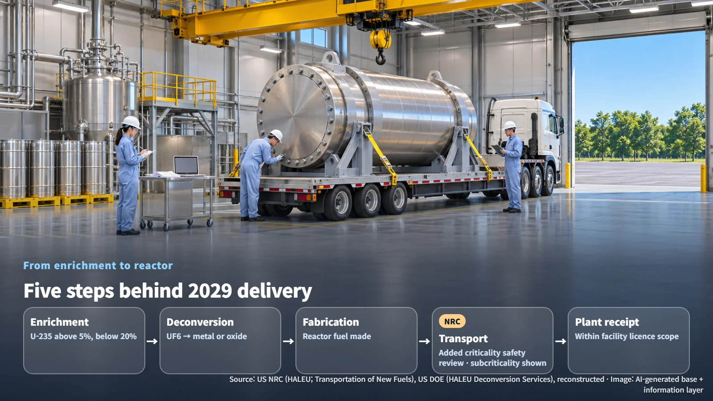

United States · HALEU · Fuel Supply
How a Power Prepayment Became a Fuel Order: The Oklo–Centrus HALEU Firm Contract and Its 2029 Delivery Conditions
Meta's power prepayment reached Centrus as a fuel payment on 2 November. Delivery from Ohio is expected to begin in 2029, after enrichment, deconversion, fabrication, transport and plant receipt line up.
When a tech giant pays in advance for electricity from reactors that have yet to be built, a natural question follows: where does that money actually go? On 12 November, reactor developer Oklo and enrichment company Centrus announced a multi-year firm HALEU purchase contract, and the deal traces that path unusually clearly. An earlier post on who makes HALEU looked at how the fuel is produced. This post follows the money that pays for it.
When and Where the Prepayment Moved
HALEU (High-Assay Low-Enriched Uranium) is uranium enriched so that uranium-235 makes up more than 5% and less than 20% of its mass. It is the fuel planned for advanced reactors such as Oklo's Aurora.
Separating the announcement date, the signing dates and the day the money changed hands makes the sequence easy to follow.
| Date | What happened | |---|---| | 5 January 2026 | Oklo and Meta sign a power prepayment agreement (covering a planned 1.2 GW powerhouse campus in Ohio) | | June 2026 | Oklo and Centrus sign a letter of intent | | 30 September 2026 | Conditional HALEU supply contract signed | | 2 November 2026 | Initial Meta funds released from escrow and paid directly to Centrus | | 6 November 2026 | Oklo files its quarterly report (Form 10-Q) | | 12 November 2026 | Multi-year firm contract announced | | 2029 (expected) | Supply begins from the American Centrifuge Plant in Pike County, Ohio |
Source: reconstructed from Oklo, Form 10-Q, and Centrus announcement of 12 November 2026
A power prepayment agreement is a framework in which Meta pays ahead for electricity it will use later, helping fund reactor deployment. Escrow is an arrangement where money is held separately and handed over once agreed conditions are met. On 2 November, those funds were released and went straight to Centrus, where they were applied to the fuel order.
The gaps between dates tell their own story. From contract signing (30 September) to payment (2 November) is about 33 days; to the announcement (12 November) it is about 43 days, a little over six weeks. The money actually moved on 2 November, ten days before the announcement, and that fact surfaced first in the quarterly filing. The release conditions and the amount have not been disclosed.

What "Fuel for Five Units," "a 1.2 GW Campus" and "$5.4 Billion" Each Cover
The three headline numbers in this news each refer to something different.
First, multi-year operating fuel for up to five Aurora units. This is the direct scope of the new contract. It supports the initial phase in Ohio, subsequent Aurora deployments, and reloads (replacing spent fuel with fresh fuel) for Aurora-INL.
Second, the 1.2 GW powerhouse campus in Ohio. This is the full deployment plan covered by the Meta prepayment agreement; the five-unit fuel contract serves its front end.
Third, $5.4 billion. This is the combined value of the low-enriched uranium (LEU) and HALEU customer contracts and purchase commitments Centrus has secured for its new production capacity. It adds up contracts from multiple customers. The purchase volume, price and prepayment amount for the Oklo contract itself have not been disclosed.
The three numbers read most accurately as two nested relationships: "contract scope < campus plan" and "individual contract ⊂ company-wide order book." The meaningful change inside this structure is that a channel running from a power buyer's money, through a fuel payment, to new domestic US enrichment capacity has now been confirmed alongside an actual payment record.
From Enrichment to Reactor: The Processes and Licenses Behind 2029 Delivery
After a firm contract comes the work of actually making and moving the fuel. Getting enriched uranium to a reactor runs through five process and licensing steps.
1. Enrichment: Raising the uranium-235 share to more than 5% and less than 20%, either by gas centrifuge or by downblending more highly enriched material. 2. Deconversion: Converting gaseous uranium hexafluoride (UF6) from the enrichment process into a form, such as metal or oxide, that can be fabricated into fuel. The US Department of Energy (DOE) procures this as a separate service within the HALEU supply chain. 3. Fuel fabrication: Making the fuel that goes into the reactor. 4. Transport: Moving the material in packages with demonstrated criticality safety. 5. Receipt at the plant: Storage and use within each facility's licensed scope.
The US Nuclear Regulatory Commission (NRC) licenses and regulates the production, use, storage and transport of commercial HALEU. Compared with conventional reactor fuel (5% or below), transport carries one additional requirement. UF6 packages above 5% need criticality safety evaluation beyond what existing low-enriched shipments require, and any exemption request goes through NRC review. Criticality safety means controlling the quantity, shape and arrangement of material so that a self-sustaining fission chain reaction stays out of reach.
When unirradiated HALEU fuel is shipped, the shipper must demonstrate that it remains subcritical (a state in which a chain reaction cannot sustain itself). The NRC describes new experiments, sensitivity and uncertainty analysis, appropriate margins, or a combination of these as ways to make that demonstration. Delivery in 2029, in the end, depends on the enrichment expansion moving in step with readiness and licensing for deconversion, fabrication and transport.

Public Records to Watch Next
The progress confirmed so far is the signing of the conditional supply contract, the initial payment, and the announcement of the firm contract. Four items are worth watching from here.
- Delivery form, volume and schedule: whether material is handed over as UF6 or in deconverted form, and the annual quantities
- Prepayment terms: refunds, payment guarantees, remedies for delivery delays, and title transfer conditions. These have yet to appear in public filings and would be confirmed through contract exhibits or later disclosures
- Enrichment expansion progress: capacity build-out at the Pike County facility timed for 2029 supply
- Ohio licensing timeline: progress on facility-specific licenses for the powerhouse and fuel-related facilities
Money paid in advance for electricity became a fuel order, and that fuel order is now backing an enrichment plant expansion; this time the structure showed up in an actual payment record. Once volumes and terms are disclosed, it will be possible to judge how strong each link in that chain really is.